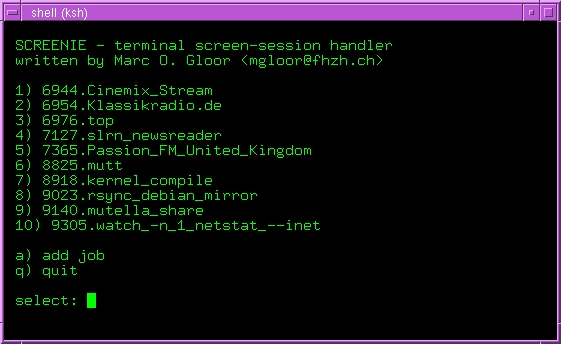

Please note:
This site is orphaned - you might find the latest version of screenie in the distribution of your choice or under the following URL: http://sourceforge.net/projects/screenie (Thanks to Jiri Nemecek)
Abstract
Screenie is a small and
lightweight GNU screen(1)
wrapper that
is designed
to be a session handler that simplifies the process of administrating
detached jobs by providing an interactive menu.
Comments
This package is an ongoing work in progress snapshot
(wip), it was initially written for Linux but after a while, I
completely redesigned the script to be POSIX compliant with
regard to portability which means that I only used POSIX compliant
shell builtin functions. Please note that you can
improve the quality of screenie
by sending me patches,
comments,
hints, ideas, bug-
and testreports
|
|
|
|
Screenshot

Frequently asked questions
Q: How can I upgrade screenie
from an older version to screenie 1.30?
A:
dpkg -r screenie && dpkg -i
screenie_1.30.0-1_all.deb
Q: How
can I switch
between screen sessions?
A:
start screenie and choose a
session no. from the menu, to detach
press C-a d (this will return to the screenie interface).
Q: Some
sessions are blocked when I try to choose a session from the menu?
Nothing happened when I choose a session?!
A: You
can't select a session which is already attached and in use on another
terminal, detach the related session first.
Q: Which version of scrennie is
installed on my system?
A: Type
the follwing command 'screenie -v'
Download local packages, from an official distribution or 3rd party
maintainers:
debian package:
screenie_1.30.0-1_all.deb
[.deb, 5.6kb]
gzip compressed tape archive: screenie-1.30.0.tar.gz
[.tar.gz, 11kb]
bzip2 compressed tape archive: screenie-1.30.0.tar.bz2
[.tar.bz2, 9.9kb]
gzip compressed shell
archive: screenie-1.30.0.shar.gz
[.shar.gz,
13kb]
Debian: http://packages.debian.org/screenie and CVE-2008-5371 (thanks to Tomas Pospisek)
ArchLinux: http://aur.archlinux.org/packages.php?do_Details=1&ID=6328
(thanks to Frank Oosterhuis)
Gentoo: http://gentoo-portage.com/app-misc/screenie
(thanks to Chris White, Tom Martin, Henry Bucklow)
Redhat/Fedora: http://rpmforge.net
and dries
rpm repository and http://dag.wieers.com/packages/screenie
(thanks to Dries Verachtert, Dag Wieers)
Suse: ftp.gwdg.de
and rpm.bone.net
(thanks to Pascal Bleser)
FreeBSD
ports tree: http://www.freebsd.org/cgi/cvsweb.cgi/ports/sysutils/screenie/
Source Mage: Source Mage GNU/Linux
(thanks to Richard Johns)
screen screen (session
handler
handling administering adminion linux unix bsd MacOS frontend
$Id: screenie.html,v 1.40 2020/11/21 11:13:30 gloor Exp gloor $ |